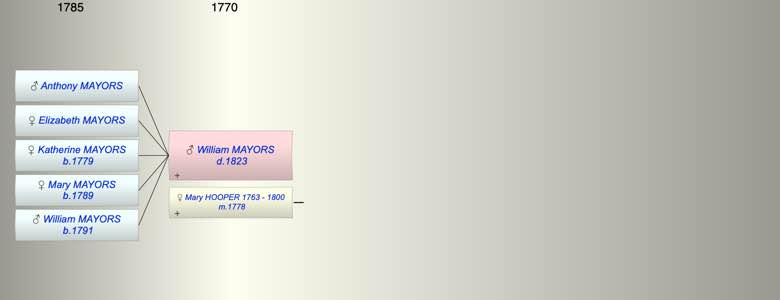

| [Index] |
| William MAYORS ( - 1823) |
|  |
| m. 30 Dec 1778 Mary HOOPER (1763 - 1800) at St Laurence |
| d. 1823 at St Laurence |
| Children (5): |
| Anthony MAYORS |
| Elizabeth MAYORS |
| Katherine MAYORS (1779 - ) |
| Mary MAYORS (1789 - ) |
| William MAYORS (1791 - ) |
| Events in William MAYORS ( - 1823)'s life | |||||
| Date | Age | Event | Place | Notes | Src |
| Birth of son Anthony MAYORS | ex Grandmother's will | ||||
| Birth of daughter Elizabeth MAYORS | ex Grandmother's will | ||||
| 30 Dec 1778 | Married Mary HOOPER (aged 15) | St Laurence | Note 1 | ||
| 30 Apr 1779 | Birth of daughter Katherine MAYORS | St Laurence | Note 2 | ||
| 1789 | Birth of daughter Mary MAYORS | St Laurence | Note 3 | ||
| 1791 | Birth of son William MAYORS | St Laurence | Note 4 | ||
| 1800 | Death of wife Mary HOOPER (aged 37) | St Laurence | Note 5 | ||
| 1823 | William MAYORS died | St Laurence | buried St Laurence 4 Mar 1823 | ||
| Created on a Mac™ using iFamily for Mac™ on 8 Oct 2023 |